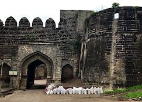
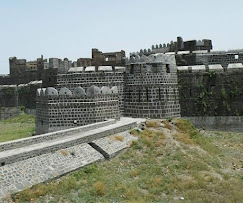
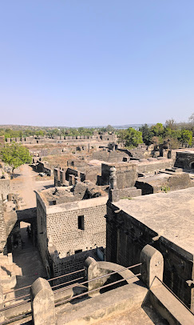

कंधार किल्ला
Location : Click Here For Google Map
- माहिती
- कंधार किल्ला महाराष्ट्रातील नांदेड जिल्ह्यातील एक ऐतिहासिक किल्ला आहे जो १०व्या शतकाच्या आसपास बांधला गेला होता. हा किल्ला डोंगराच्या शिखरावर वसलेला असून, त्याचा ऐतिहासिक आणि रणनीतिक महत्त्व मोठा आहे. कंधार किल्ल्याची भव्यता आणि मजबुती त्याच्या स्थापत्यशास्त्रात दिसून येते, ज्यामुळे किल्ला त्याच्या काळात एक मजबूत संरक्षणात्मक ठिकाण बनला होता. किल्ल्याच्या अवशेषांमध्ये, भक्कम भिंती, पाणी व्यवस्थापन प्रणाली, आणि भव्य दरवाजे दिसतात. कंधार किल्ल्याच्या किल्ल्याच्या ऐतिहासिक महत्त्वामुळे तो मध्ययुगीन भारताच्या सैन्य धोरणाच्या दृष्टीने महत्त्वपूर्ण ठरला. त्याच्या भिंतीवरून अनेक युद्धे लढली गेली आणि किल्ल्याच्या संरक्षणासाठी सैनिकांनी मोठ्या शौर्याची पराक्रम केली. किल्ल्याच्या पायथ्याशी असलेल्या गावात आजही काही लोकांचा वावर आहे, परंतु किल्ला सध्या ऐतिहासिक स्थळ म्हणून ओळखला जातो. कंधार किल्ल्यावर चढायला लागणारा ट्रेक इतर किल्ल्यांच्या तुलनेत खूप कठीण नाही, तरीही तेथे पोहोचण्यासाठी चांगली शारीरिक तयारी आवश्यक आहे. किल्ल्याच्या शिखरावरून आसपासच्या हिरव्या डोंगररांगा, नदीचे दृश्य आणि सुसज्ज किल्ल्याच्या भव्यतेचा अनुभव घेणारा ट्रेकिंग प्रेमी एक अविस्मरणीय साहस अनुभवतो.
Explore the historical beauty


